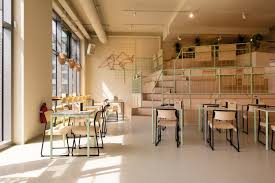
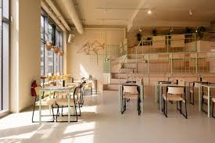
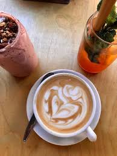
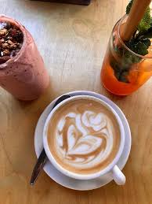

Welcome to Cozy Brew Cafe!
Your neighborhood gathering place for exceptional coffee, artisanal pastries, and warm community connections in the heart of downtown.
Experience Cozy Brew


 

 

What Makes Us Special
Premium Coffee
Sourced from sustainable farms and roasted in-house daily for the perfect cup every time.
Fresh Pastries
Handcrafted pastries, sandwiches, and light meals made fresh daily with local ingredients.
Cozy Atmosphere
A cozy space perfect for catching up with friends, working, or simply enjoying a quiet moment.
About Us
Cozy Brew Cafe is a warm and inviting neighborhood haven where passion for exceptional coffee meets a welcoming atmosphere. At Cozy Brew, every cup is crafted with care using high-quality beans and creative blends, designed to bring comfort and joy to your day. Whether enjoying our signature house brews, artisanal lattes, or indulgent pastries, guests experience a perfect blend of flavor and community. We are dedicated to making Cozy Brew Cafe a place where friends gather, conversations flow, and every visit feels like coming home.